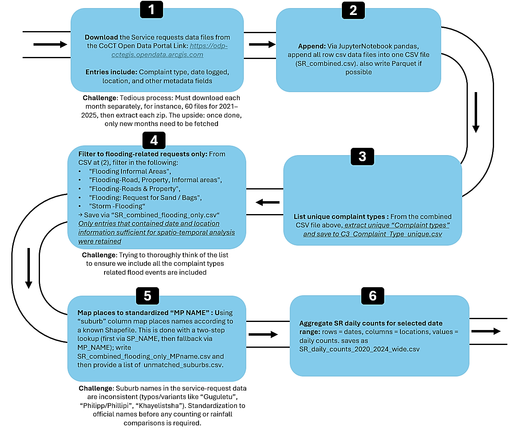

Event chronology
Develop a multi-source flood event chronology for Cape Town.
CASCADE · CSAG · University of Cape Town
A working prototype linking multi-source flood impact records to City of Cape Town spatial boundaries. Users can inspect polygons, filter records, view trends, understand impact classifications, and download the filtered dataset.
Website contents
This version is organised like a web app. Each button opens one section only, instead of making users scroll through a long report-style page.
Background
Flooding is a persistent and growing urban hazard in sub-Saharan Africa. In this project, a flood event is understood as the temporary inundation of areas not normally covered by water, caused by overflowing water bodies or by the accumulation of surface or sea water, where observable disruption occurs.
Neighbourhood-scale flood impacts are often not systematically captured by hazard-focused systems. Instead, local disruptions are reported across fragmented sources such as news media, climate summaries, municipal records and disaster databases. This platform therefore brings those records into one spatially explorable prototype for the City of Cape Town.
The current study focuses on Cape Town flood occurrence and reported impacts, with future work aimed at linking the database to precipitation, health, vulnerability and infrastructure datasets.

Study objectives
Develop a multi-source flood event chronology for Cape Town.
Compare SAWS, FloodList, news archives, EM-DAT and municipal service request records as they are integrated.
Identify recurrently affected areas and possible under-reported locations.
Prepare the database for comparison with precursor precipitation and future climate-health analysis.
Framework
The database uses a flood impact classification framework adapted from Diakakis et al. (2020). Impacts are grouped into four domains: built environment, mobile objects, natural environment, and human population. Class numbers are ordinal within each domain, meaning higher numbers indicate greater impact severity within that category.
Methodology
Click each source below to view the access route, extraction approach, processing workflow and main limitations. The figures can be replaced with cleaner final versions later.
Limitations and responsible use
Flood impacts are reported unevenly across media, institutional and administrative sources. Smaller or less-publicised events may be under-represented.
Some records are suburb-level while others are broader, such as Cape Town or Western Cape. This affects hotspot mapping and polygon-level interpretation.
AI-assisted extraction was checked through reviewer validation, but some records still need source verification, de-duplication and methodological refinement.
Engage with the dataset
Hover over polygons to inspect record counts. Click a polygon to filter the database to that location. Use the filters to explore source, year and impact category patterns.